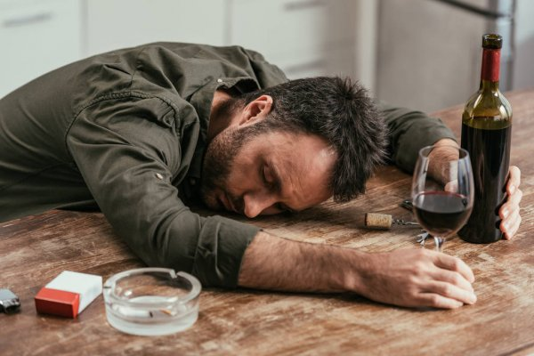

1. Az emberi, állati test nyugalmi állapota, amikor a szem be van csukva, és az elme nem éber. Ekkor a tudatos mozgás teljesen vagy nagyrészt szünetel, a test nyugalomban van, és ezáltal a szervezet pihen, felfrissül, testi és lelki erői megújulnak.
A embernek legalább hét-nyolc órai alvásra van szüksége. Fáradtság esetén több alvásra van szükség.
2. Pihentető felfrissülés, amely a test lehunyt szemű nyugalmi állapotában következik be.
A tevékeny fennlét után jön az alvás. A mély alvás a jó egészség egyik biztosítéka. Egy gyermeknek több alvásra van szüksége.
3. Éjszakai fekvés; az éjszaka testi nyugalma; hálás.
A házastársak a közös alvás után frissen ébrednek. A túrázók szerint a szabad ég alatt alvás érdekes élmény.
